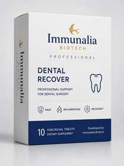

Produkty pro odbornou praxi
Pět cílených linií.
Jeden profesionální standard.

Stomatologie
Dental Recover
Profesionální podpora pro stomatologické výkony, extrakce, implantace a následnou regeneraci.
Otevřít odbornou sekci
Chirurgie · Urologie · Dermatologie
Post‑Op Recover
Profesionální podpora pooperační obnovy, sledování bolesti, otoku, hojení a návratu k běžné aktivitě.
Otevřít odbornou sekci
Gynekologie
Flow Professional
Profesionální podpora ženské rovnováhy, komfortu a sledování gynekologického programu.
Otevřít odbornou sekci
Dermatologie · Estetická medicína
Skin Professional
Cílená podpora rovnováhy pokožky a odborných režimů péče o problematickou pleť.
Otevřít odbornou sekci
Dermatologie · Kompaktní formát
Skin Micro
Diskrétní balení po 10 tabletách ve velikosti běžného balení antikoncepce, vhodné do kabelky a na cesty.
Otevřít odbornou sekci